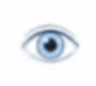
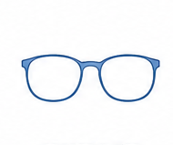
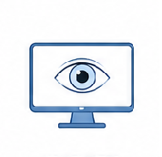
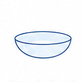
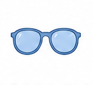
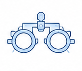
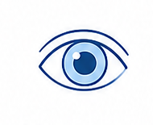
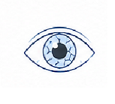

Оптометрист в Нови-Саде
Для взрослых и детей. От проверки зрения до получения готовых очков.
Анна Новосёлова · Оптика Ginter
Почему выбирают
Не тороплюсь. Тщательно проверяю зрение и отвечаю на все вопросы.
Учитываю работу, нагрузки, привычки и комфорт в каждом случае.
Вы понимаете, что происходит с вашим зрением и почему я рекомендую именно это.
Помогаю на всех этапах: от проверки зрения до адаптации к новым очкам или линзам.
Чем могу помочь

Подберу новую коррекцию — отдельно для дали, работы за компьютером или чтения, в зависимости от вашей ситуации.

Разберу причину: ошибка в подборе, неправильно подобраны линзы или оправа — и предложу решение.

Подберу коррекцию под вашу нагрузку: прогрессивные, офисные или компьютерные линзы — то, что реально поможет.

Подберу линзы с примеркой, включая случаи астигматизма. Объясню правила ухода и ношения.

Сделаю диоптрийные солнцезащитные, фотохромные или поляризационные — под ваши параметры зрения.

Большие диоптрии, разница между глазами, астигматизм, дети — разберёмся вместе, шаг за шагом.
Стоимость

Полное обследование, подбор очков или линз, рекомендации, помощь с заказом.
⏱ 60 минутКонтроль зрения, коррекция подбора. В течение 6 месяцев после первичного.
⏱ 60 минутОплата только наличными · Запись обязательна
Процесс
Обсуждаем ваши симптомы и историю зрения.
Проводим комплексную проверку на современном оборудовании.
Подбираем оптимальные очки или линзы и объясняем все рекомендации.
Вы получаете план действий и все необходимые рекомендации.
Помогаю с адаптацией и остаюсь на связи при необходимости.
О зрении

Здоровье
Сухость, покраснение, усталость — разбираем, что реально помогает.
Приём
Подробно о каждом этапе.
Линзы
О рынке контактных линз честно.
Выберите удобное время онлайн — без звонков и ожидания.
Оптика Ginter · Trg Republike 25, Novi Sad